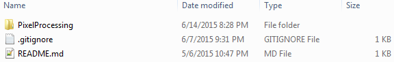
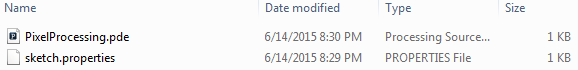
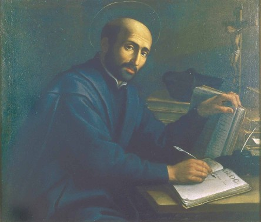
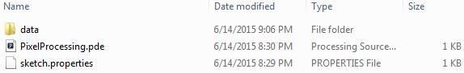
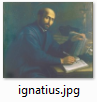

Open Processing from Start Menu > All Programs > Processing
By now, you should have already created a repository on Github and cloned it into the local file system. If you haven't, be sure to complete these steps.
File > Save As
Navigate to where your local Github project was cloned, and save this blank sketch as PixelProcessing. Your file system should now look like this:
Inside the PixelProcessing folder should look like this:
To get everyone on the same page, let's start with the same image. This is Saint Ignatius working at his desk.
To do so, simply drag the image from this web page and drop it on top of your Processing sketch.
Notice your file system has changed. A data folder was created...
... and in it there is now this ignatius.jpg:
Next, we turn our focus to pixels. This particular image is 444 pixels wide and 377 pixels high, totaling 444 x 377 = 167,388 total pixels.
Let's write some code that uses this image.
Working with Images